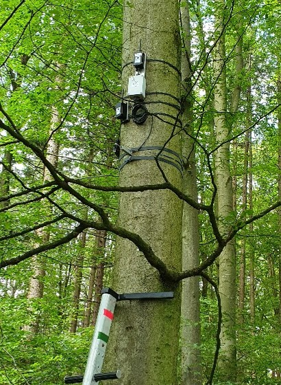
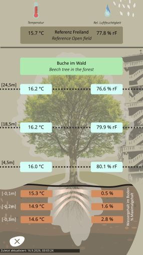
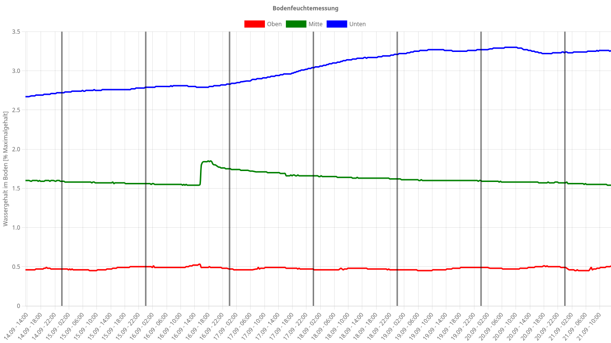

Der Talking Tree – Ein Baum, der Geschichten erzählt
Im Ebersberger Stadtwald steht eine ganz besondere Buche. Sie kann zwar nicht sprechen, aber sie zeigt uns in Echtzeit, wie es ihr geht: Wie warm es in ihrer Krone ist, wie feucht der Boden ist, ob sie Stress hat oder entspannt wächst.

Warum ist das Projekt so spannend?
Der Talking Tree verbindet Natur, Technik und Umweltbildung auf einzigartige Weise. Sensoren messen Temperatur, Luftfeuchtigkeit und Bodenwassergehalt – und machen sichtbar, wie ein Baum auf Wetter, Klima und Trockenheit reagiert.
Was kann man hier entdecken?
- Wie sich Temperatur und Feuchtigkeit im Baum verändern
- Wie der Boden Wasser speichert – und wann es kritisch wird
- Wie stark ein Baum auf Hitze oder Trockenheit reagiert
- Wie Klima und Baumleben zusammenhängen
Die Daten werden alle 20 Minuten aktualisiert und stehen hier live zur Verfügung.
Live‑Daten
Messwerte der Buche an der Ludwigshöhe (stündlich aktualisiert).

Messreihen der letzten 7 Tage
Hier kannst du die zeitlichen Verläufe der Messwerte betrachten. Jeder Reiter erklärt kurz, was der jeweilige Wert über den Zustand des Baumes aussagt.
Bodenfeuchtigkeit
Die Bodenfeuchte zeigt, wie viel Wasser dem Baum zur Verfügung steht. Sinkt sie stark ab, gerät der Baum unter Stress: Er schließt seine Spaltöffnungen, spart Wasser und wächst langsamer.

Über den Talking Tree
Im Stadtwald nahe des Museums steht ein ganz besonderer Baum: der „Talking Tree“. Diese Buche kann zwar nicht sprechen, aber sie zeigt auf faszinierende Weise, was in ihrer Umgebung passiert.
In verschiedenen Höhen und im Boden wurden Sensoren angebracht, die Temperatur, Luftfeuchtigkeit und Bodenwassergehalt messen. Ein Referenzsensor am Museum ergänzt die Daten.
Die Messwerte werden alle 20 Minuten per LoRa-Funk übertragen und im Museum sowie online dargestellt.
Pädagogischer Nutzen
Der Talking Tree macht sichtbar, wie stark Temperatur und Feuchtigkeit rund um einen Baum schwanken. Sinkt die Bodenfeuchte, gerät der Baum unter Stress: Er spart Wasser, wächst langsamer und verändert seinen Tagesrhythmus.
So wird verständlich, welche Folgen Hitzeperioden oder Trockenheit haben und warum Bäume eine wichtige Rolle für ein stabiles Klima spielen.
Datenarchiv
Hier findest du die vollständigen Messdaten des Talking Tree. Der Zugriff ist geschützt, da die Daten nur für interne Zwecke bestimmt sind.
Anmeldung erforderlich
Bitte Passwort eingeben, um auf die Daten zuzugreifen.
Impressum
Lorenz Göttlein
Falkenstr.46
93176 Beratzhausen
Kontakt
E-Mail: lorenz.goettlein@online.de